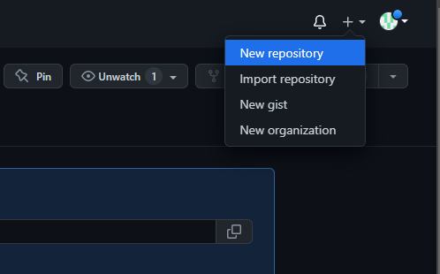
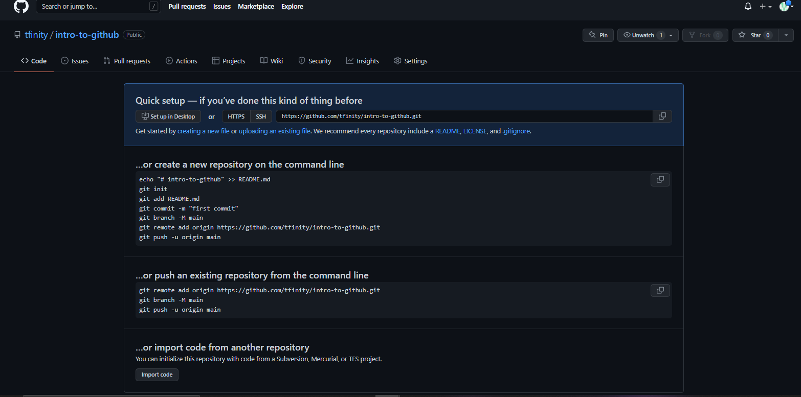
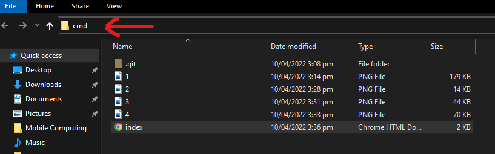
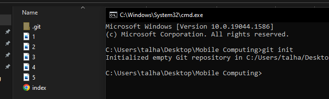

Now you will need a github account to keep and track your Files. For that goto Github.com And create your account. If you already have a account just login.
Now you will need a repository to store your files.
To create Repository Login to your account and hit the + Icon at the top right corner -> New Repository
Give your Repository a Name and then hit Create Repository
After you Repository is Created You will see a Page similar to this.
Go to Your Project folder and in the address bar enter cmd and hit Enter
In CMD enter "git init" and press enter. You will see a folder named ".git" created in your project folder.

To add Files to Local Repository use Command "git add \